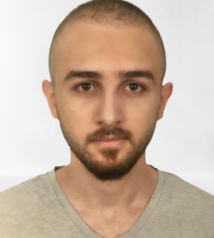

Enes Kurt

Hakkımda
Merhaba, ben Enes Kurt Bursa'da yaşıyorum. Bursa Uludağ Üniversitesi Makine Mühendisliği Bölümü mezunuyum ve şu an bütünleşik doktora yapmaktayım.
Yazılıma olan ilgimden dolayı aktif olarak kendimi yazılımda geliştirmeye çalışıyorum. Patika.dev ve Kodluyoruz sayesinde bu yolda ilerliyorum.
Program Bilgilerim
- CAD Programları:
- Autodesk Inventor --- 3/5
- SolidWorks --- 3/5
- Catia --- 2/5
- ANSYS --- 3/5
- Microsoft Office --- 4/5
- Yazılım Programları:
- C++ --- 2/5
- C# --- 2/5
- Matlab --- 3/5
- Github, Git --- 3/5
- JavaScript --- Yeni Öğreniyorum
- HTML --- Yeni Öğreniyorum
Hobilerim
- Formula 1
- Film, dizi ve anime izlemek
- PC oyunları
- Kampçılık ve balıkçılık
- Fitness ve spor aktiviteleri
İletişim Bilgilerim